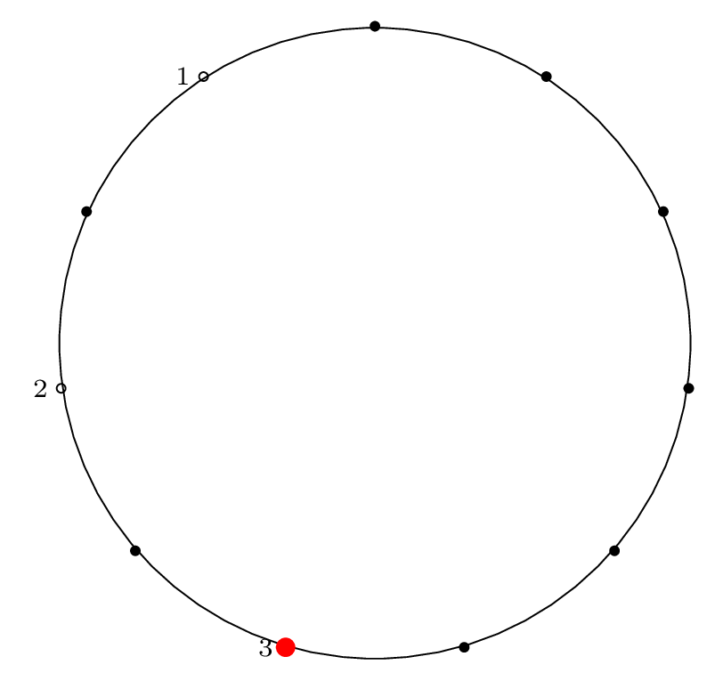

This is Part 2 of an N-part series.
- The Josephus Problem: Part 1: The Problem
- The Josephus Problem: Part 2: Two Examples
- The Josephus Problem: Part 3: Solving the Double Step Case
Two Examples
In this blog post we'll walk through two examples of a Josephus problem:
and
We will simulate the Josephus process and show how the solution is expressed using both permutation notation and cycle notation.
n = 8, m = 4
We begin with the example that Knuth gives in his problem statement, \(n = 8, m = 4\), along with its solution, \(54613872\).
Here is the Josephus circle for this case, and the corresponding removal index on the right (the red dot indicates the starting point for the process):
Circle index:
|
Removal index:
|
Step by Step Removal for n = 8
Starting at the red dot, we proceed \(m-1\) points forward through the circle (\(m\) if we include the starting point), skipping items that have already been removed, and remove an item from the circle.
We indicate the starting point with a red dot in Step 0, then indicate the removal index with a red dot and the corresponding removal index.
| Step 0: Starting Point |

|
| Step 1: |

|
| Step 2: |

|
| Step 3: |

|
| Step 4: |

|
| Step 5: |

|
| Step 6: |

|
| Step 7: |

|
| Step 8: |

|
Writing the Solution Permutation: Two Row Notation
As mentioned in Part 1, we can think about the final removal order of sushi plates (or mice, or soldiers) as a special permutation, the Josephus permutation. If we want to write the Josephus permutation using the standard two-row notation for permutations, we would write the circle order (the index of items around the circle) on the top row, and the removal order (the index of items as they are removed) on the bottom row. This gives:
While this notation is more intuitive (makes it easier to answer a variety of questions), it is also inconvenient notation, since there are many equivalent ways of writing a single permutation.
Writing the Solution Permutation: Cycle Notation
In Part 1 we also introduced cycles and cycle notation. Writing a permutation as a cycle is a unique representation of that permutation. By tracing which elements are permuted with other elements, we can turn the two-row representation into a cycle representation.
Here is the Josephus permutation for \(n = 8, m = 4\) in cycle notation:
Visual Representation of Solution Permutation
To represent the Josephus permutation graphically, we draw lines connecting the edges that permute and form cycles:

This is a visual representation of the Josephus permutation for \(n = 8, m = 4\).
n = 11, m = 2
Next is an example with a step size of two, which is a special case of the Josephus problem with a slightly easier solution procedure.
Here is the final Josephus permutation on a circle, which is what our procedure below will yield:
Circle index:
|
Removal index:
|
Step by Step Removal for n = 11
As before, we proceed from the red dot, moving forward \(m-1\) items and removing the \(m^{th}\) item.
We indicate the starting point with a red dot in Step 0, then indicate the removal index with a red dot and the corresponding removal index.
| Step 0: Starting Point |

|
| Step 1: |

|
| Step 2: |

|
| Step 3: |
|  |
| Step 4: |

|
| Step 5: |

|
| Step 6: |

|
| Step 7: |
| Step 8: |

|
| Step 9: |

|
| Step 10: |

|
| Step 11: |

|
Two Row Notation
Here is the two-row representation:
Cycle Notation
When factored into a cycle, this gives:
Circle Permutation Diagram
To represent the Josephus permutation graphically, we draw lines connecting the edges that permute and form cycles:

This is a visual representation of the Josephus permutation for \(n = 11, m = 2\).
Next Steps: Solve!
Our next steps are simple: solve it!
In Part 3 we will show the solution of the special case of \(m = 2\) (the double-step case).
In Part 4 we will show several ways to solve the general case, and walk through some examples where we apply the solution procedure.